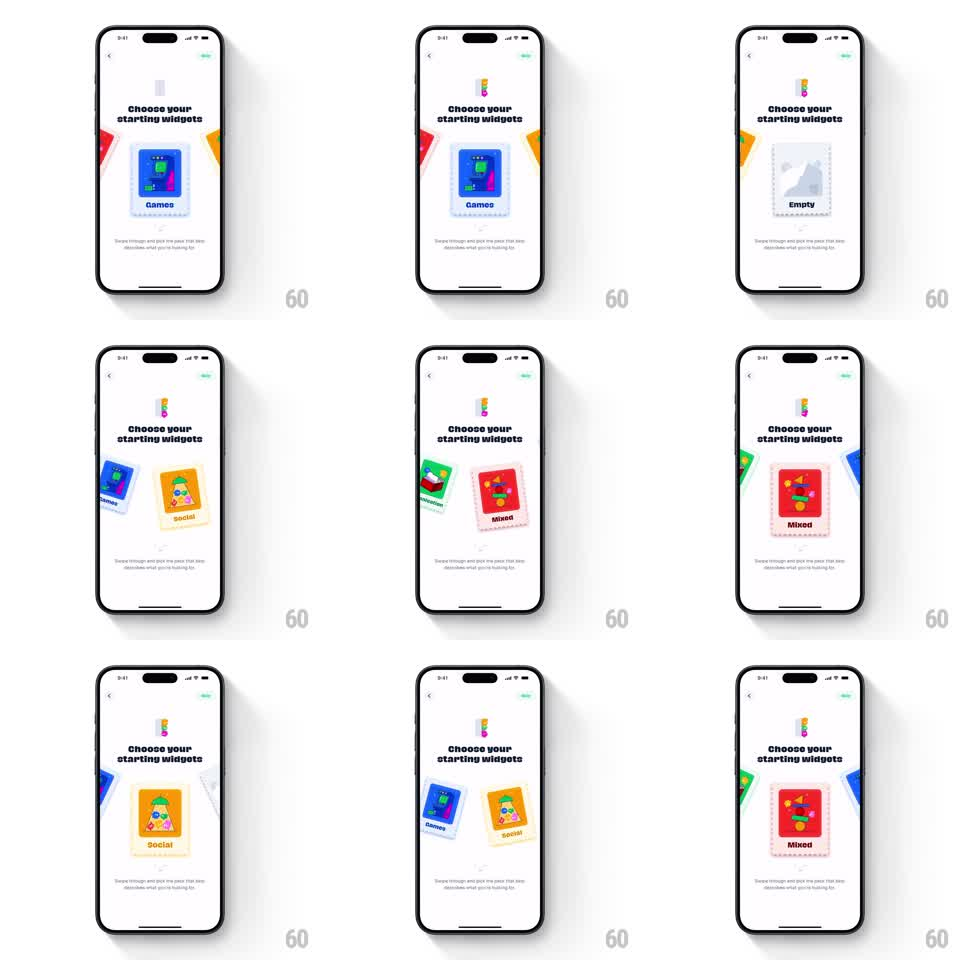

Media
Frame-by-frame

Rebuild this interaction 1:1: Abode's "Choose your starting widgets" card swipe - colorful widget cards (Games, Social, Mixed, Empty) form a fanned deck mid-screen, and swiping throws the top card off with rotation while the next card springs to the front.

Rebuild this interaction 1:1: Abode's "Choose your starting widgets" card swipe - colorful widget cards (Games, Social, Mixed, Empty) form a fanned deck mid-screen, and swiping throws the top card off with rotation while the next card springs to the front. ## Integration Integration: stack-agnostic spec - springs given as stiffness/damping, timed motions as duration + curve; map every value to your framework and animation library of choice. ## Scene White onboarding screen: "Choose your starting widgets" headline with subcopy about swiping through the deck, a small mascot at the top, and a fanned stack of widget cards (blue Games, orange Social, red Mixed, dashed gray Empty) each showing a mini widget illustration and label. ## Motion spec Pattern: swipeable card deck with springy restack. - The deck sits fanned: each card behind rotates a few degrees more (+/-8deg spread) and offsets down 6pt per depth level. - Drag: the top card tracks the finger 1:1, rotating with horizontal velocity (up to +/-15deg); cards beneath begin closing the gap (each steps up one fan position, spring ~280/20). - Release past threshold: the card flies off in the drag direction (keeps velocity, extra rotate to +/-25deg, fades past the edge, 300ms). - Release under threshold: the card springs back to center (spring ~300/18). - The incoming top card pops slightly (scale 0.98 -> 1.0) as it takes focus. - Tapping a card selects it: a quick lift (translateY -8pt, scale 1.03, 150ms) with a check state. ## Calibration - Rotation during drag is velocity-driven - slow drags barely tilt. - The Empty card is a dashed placeholder, visually lighter than the filled cards. ## Reduced motion Swiping pages the deck with a 250ms slide; no rotation or fling. ## Don't miss - Cards show real miniature widget art (charts, icons), not flat color blocks. - The deck's fan direction alternates subtly as cards cycle.